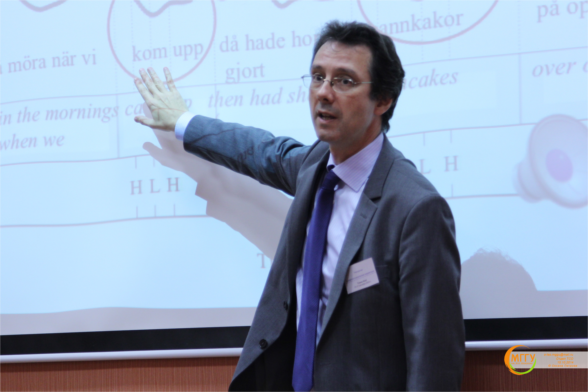
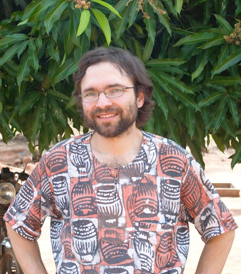

TMP 2014 Invited Speakers
Tomas RiadAffiliation: Stockholm University Research Interests: phonology, prosody, poetic metre, language history, morphology. Biography: Tomas Riad was born in Uppsala in 1959 but until the age of five, lived periodically in Cairo and Alexandria in Egypt, his father's homeland, before the family returned to Uppsala. In 1978 he was admitted to the Royal College of Music in London to study violin, and remained a year. His interest in music was again reflected a few years later when he was accepted into the renowned Uppsala men's choir, Orphei Drängar. Education and Career:
Research: Tomas Riad is considered one of the world's leading authorities in his research field. In his book "The Phonology of Swedish" (2014) he describes the phonological structure of Swedish, examining everything from segmental structure to quantity, accentuation and intonation. Among his most important findings are insights into how the accentuation system largely regulates the morphology in Swedish. |
Yuri Konstantinovich Kuzmenko
Affiliation: Humboldt University, Berlin, ILS RAS, St. Petersburg Research Interests: phonology and historical linguistics of Germanic languages, documentation of endangered languages, Sami languages. Education and Career:
Professional Activities:
|
Sergei Georgievich Tatevosov
Affiliation: MSU, Moscow Current Affiliation: Head of Department of Theoretical and Applied Linguistics, Faculty of Philology, Moscow State University Research Interests: linguistic typology, morphology, semantics, Caucasian, Turkic and Uralic languages. Biography: Born on December 14, 1968, in Leningrad. Education and Career:
Achievements:
|
Andrei Boleslavovich Shluinsky (Gensling)Affiliation: IL RAS, Moscow Current Affiliation: Humboldt-Universität zu Berlin Research Interests: Kwa languages, Mande languages, Samoyedic languages, Turkic languages, descriptive linguistics, linguistic typology, syntax, semantics, aspectology, verbal plurality, complex verbal constructions. Professional Activities:
Current Research:
|